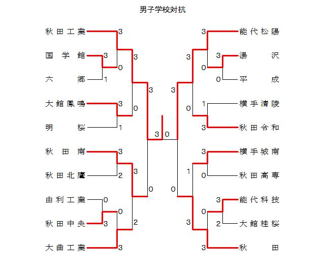

【対戦明細】
【対戦明細】
| 男子学校対抗 １ |
| | 国学館 | ３ | − | １ | 六郷 |
|---|
| D1 | 山正栄治
齊藤颯杜 | 0 | 12-15
12-15 | 2 | 後藤秀太
北村隼希 |
|---|
| D2 | 高橋鉄平
佐々木嘉輝 | 2 | 15-12
19-17 | 0 | 樫尾祐斗
渡邊悠 |
|---|
| S1 | 菅原理央 | 2 | 17-15
18-16 | 0 | 佐藤秀哉 |
|---|
| S2 | 齊藤颯杜 | 1 | 14-16
19-17
8-8 | 1 | 後藤秀太 |
|---|
| S3 | 佐々木嘉輝 | 2 | 13-15
15-13
15- 4 | 1 | 北村隼希 |
|---|
| 男子学校対抗 ２ |
| | 秋田中央 | ３ | − | ０ | 由利工業 |
|---|
| D1 | 小熊悠斗
児玉勇那 | 2 | 3-15
18-16
17-15 | 1 | 佐藤泰寿
岡部誓 |
|---|
| D2 | 安藤睦人
小笠原優翔 | 2 | 15- 5
15- 6 | 0 | 小番真翔
小松功汰 |
|---|
| S1 | 齋藤郁仁 | 2 | 15-13
15-13 | 0 | 柴田幹太 |
|---|
| S2 | 姉崎歩 | | | | 佐藤泰寿 |
|---|
| S3 | 三浦壮真 | | | | 小番真翔 |
|---|
| 男子学校対抗 ３ |
| | 湯沢 | ３ | − | ０ | 平成 |
|---|
| D1 | 菊地煌将
小南葵 | 2 | 15- 7
15-13 | 0 | 藤原優太
油谷祐介 |
|---|
| D2 | 佐々木優真
中嶋大將 | 2 | 15- 2
15- 9 | 0 | 渡部遥陽
高橋丞 |
|---|
| S1 | 中山柊生 | 2 | 15-12
15- 9 | 0 | 最上咲翔 |
|---|
| S2 | 菊地煌将 | | | | 藤原優太 |
|---|
| S3 | 小南葵 | | | | 油谷祐介 |
|---|
| 男子学校対抗 ４ |
| | 能代科技 | ３ | − | ２ | 大館桂桜 |
|---|
| D1 | 石井桐矢
小川翼 | 0 | 11-15
11-15 | 2 | 金田大槻
本多羽琉 |
|---|
| D2 | 田森啓太
佐々木悠来 | 2 | 15- 6
15- 6 | 0 | 伊藤湊
藤原光哉 |
|---|
| S1 | 木村聖海 | 2 | 15-10
15- 6 | 0 | 田村悠河 |
|---|
| S2 | 小林麟 | 0 | 11-15
6-15 | 2 | 本多羽琉 |
|---|
| S3 | 石井桐矢 | 2 | 8-15
20-18
15-13 | 1 | 金田大槻 |
|---|
| 男子学校対抗 ５ |
| | 秋田工業 | ３ | − | ０ | 国学館 |
|---|
| D1 | 佐藤恭伍
辻葵羽 | 2 | 15- 5
15- 1 | 0 | 高橋鉄平
佐々木嘉輝 |
|---|
| D2 | 沖田朝飛
藤嶋蒼獅 | 2 | 15- 4
15- 6 | 0 | 石川涼
山田将貴 |
|---|
| S1 | 武花空輝 | 2 | 15- 6
15-13 | 0 | 菅原理央 |
|---|
| S2 | 佐藤恭伍 | | | | 佐々木嘉輝 |
|---|
| S3 | 對馬奏羽 | | | | 山田将貴 |
|---|
| 男子学校対抗 ６ |
| | 大館鳳鳴 | ３ | − | １ | 明桜 |
|---|
| D1 | 菊池昊志
加賀聖了 | 2 | 15- 6
15- 8 | 0 | 小坂優流
井上海来 |
|---|
| D2 | 佐々木想侑
成田知功 | 2 | 15-11
15- 5 | 0 | 金子陽太
川越優 |
|---|
| S1 | 佐藤恋星 | 0 | 11-15
17-19 | 2 | 佐々木波斗 |
|---|
| S2 | 加賀聖了 | 2 | 15- 8
15-12 | 0 | 小坂優流 |
|---|
| S3 | 菊池昊志 | | | | 川越優 |
|---|
| 男子学校対抗 ７ |
| | 秋田南 | ３ | − | ２ | 秋田北鷹 |
|---|
| D1 | 村松諒亮
岡崎友柚 | 2 | 15- 9
15- 6 | 0 | 佐藤慧弥
羽澤直生 |
|---|
| D2 | 佐々木周平
安田逞 | 0 | 17-19
12-15 | 2 | 宍戸壮亮
柴田康生 |
|---|
| S1 | 古川透 | 0 | 8-15
14-16 | 2 | 加藤悠稀 |
|---|
| S2 | 岡崎友柚 | 2 | 15- 6
15- 4 | 0 | 柴田康生 |
|---|
| S3 | 村松諒亮 | 2 | 15- 8
15-10 | 0 | 宍戸壮亮 |
|---|
| 男子学校対抗 ８ |
| | 大曲工業 | ３ | − | ０ | 秋田中央 |
|---|
| D1 | 太田真緒
黒川友翼 | 2 | 15-10
15- 7 | 0 | 安藤睦人
小笠原優翔 |
|---|
| D2 | 嘉藤寛人
加藤悠真 | 2 | 15- 5
15- 4 | 0 | 齋藤郁仁
三浦壮真 |
|---|
| S1 | 野村唯斗 | 2 | 15- 6
15- 4 | 0 | 小熊悠斗 |
|---|
| S2 | 黒川友翼 | | | | 小笠原優翔 |
|---|
| S3 | 太田真緒 | | | | 安藤睦人 |
|---|
| 男子学校対抗 ９ |
| | 能代松陽 | ３ | − | ０ | 湯沢 |
|---|
| D1 | 齋藤 星碧
今井 海里 | 2 | 15- 5
15- 3 | 0 | 菊地煌将
小南葵 |
|---|
| D2 | 後藤 優月
三輪 直汰 | 2 | 15- 3
15- 3 | 0 | 佐々木優真
中嶋大將 |
|---|
| S1 | 藤原 翔吾 | 2 | 15- 6
15- 8 | 0 | 中山柊生 |
|---|
| S2 | 武田 悠聖 | | | | 菊地煌将 |
|---|
| S3 | 今井 海里 | | | | 小南葵 |
|---|
| 男子学校対抗 １０ |
| | 秋田令和 | ３ | − | １ | 横手清陵 |
|---|
| D1 | 川村琉夏
渡部聡太 | 2 | 15- 7
15-10 | 0 | 吉田蓮
小沼柊斗 |
|---|
| D2 | 碇谷壮太
原田昴 | 0 | 14-16
9-15 | 2 | 佐藤海斗
杉山敦基 |
|---|
| S1 | 伊藤由羅 | 2 | 15- 4
15- 7 | 0 | 佐藤凜太朗 |
|---|
| S2 | 渡部聡太 | 1 | 8-15
15- 8
6-10 | 1 | 佐藤海斗 |
|---|
| S3 | 川村琉夏 | 2 | 15- 5
15- 8 | 0 | 杉山敦基 |
|---|
| 男子学校対抗 １１ |
| | 横手城南 | ３ | − | ０ | 秋田高専 |
|---|
| D1 | 渡辺朝陽
鎌田千尋 | 2 | 15- 3
15- 4 | 0 | 富樫要太
高橋吾慎 |
|---|
| D2 | 大山千之佑
小松蓮 | 2 | 15- 7
15- 7 | 0 | 山信田惺亜
佐藤練 |
|---|
| S1 | 小松歩大 | 2 | 15- 7
15- 8 | 0 | 中村尊音 |
|---|
| S2 | 大山千之佑 | | | | 佐藤練 |
|---|
| S3 | 渡辺朝陽 | | | | 山信田惺亜 |
|---|
| 男子学校対抗 １２ |
| | 秋田 | ３ | − | ０ | 能代科技 |
|---|
| D1 | 横尾治樹
浅野佑斗 | 2 | 15- 5
15- 7 | 0 | 田森啓太
佐々木悠来 |
|---|
| D2 | 渡部亘
猪股大典 | 2 | 15- 5
15-12 | 0 | 木村聖海
小林麟 |
|---|
| S1 | 金子航大 | 2 | 16-14
15- 9 | 0 | 石井桐矢 |
|---|
| S2 | 横尾治樹 | | | | 木村聖海 |
|---|
| S3 | 浅野佑斗 | | | | 小林麟 |
|---|
| 男子学校対抗 １３ |
| | 秋田工業 | ３ | − | ０ | 大館鳳鳴 |
|---|
| D1 | 佐藤奏羽
對馬奏羽 | 2 | 15- 9
15- 7 | 0 | 菊池昊志
佐々木想侑 |
|---|
| D2 | 辻葵羽
武花空輝 | 2 | 15- 7
15- 3 | 0 | 佐藤恋星
縄野佳知 |
|---|
| S1 | 沖田朝飛 | 2 | 15-13
15-12 | 0 | 加賀聖了 |
|---|
| S2 | 佐藤恭伍 | | | | 成田知功 |
|---|
| S3 | 對馬奏羽 | | | | 菊池昊志 |
|---|
| 男子学校対抗 １４ |
| | 秋田南 | ３ | − | ２ | 大曲工業 |
|---|
| D1 | 菊地遥仁
小畑汰介 | 0 | 6-15
6-15 | 2 | 太田真緒
黒川友翼 |
|---|
| D2 | 佐々木周平
岡崎友柚 | 2 | 15-10
16-14 | 0 | 嘉藤寛人
加藤悠真 |
|---|
| S1 | 村松諒亮 | 2 | 15- 4
15- 9 | 0 | 野村唯斗 |
|---|
| S2 | 佐々木周平 | 0 | 7-15
9-15 | 2 | 太田真緒 |
|---|
| S3 | 岡崎友柚 | 2 | 15- 8
15- 6 | 0 | 黒川友翼 |
|---|
| 男子学校対抗 １５ |
| | 能代松陽 | ３ | − | ０ | 秋田令和 |
|---|
| D1 | 後藤 優月
三輪 直汰 | 2 | 15- 9
15- 5 | 0 | 原田昴
碇谷壮太 |
|---|
| D2 | 今井 海里
武田 悠聖 | 2 | 15-12
15-13 | 0 | 川村琉夏
渡部聡太 |
|---|
| S1 | 藤原 翔吾 | 2 | 15- 7
15- 5 | 0 | 伊藤由羅 |
|---|
| S2 | 後藤 優月 | | | | 渡部聡太 |
|---|
| S3 | 今井 海里 | | | | 川村琉夏 |
|---|
| 男子学校対抗 １６ |
| | 秋田 | ３ | − | １ | 横手城南 |
|---|
| D1 | 横尾治樹
浅野佑斗 | 2 | 15-11
15-11 | 0 | 渡辺朝陽
鎌田千尋 |
|---|
| D2 | 金子航大
猪股大典 | 2 | 15-17
16-14
16-14 | 1 | 大山千之佑
小松蓮 |
|---|
| S1 | 渡部亘 | 1 | 5-15
15- 8
11-15 | 2 | 小松歩大 |
|---|
| S2 | 横尾治樹 | 2 | 15- 5
15- 4 | 0 | 大山千之佑 |
|---|
| S3 | 浅野佑斗 | | | | 渡辺朝陽 |
|---|
| 男子学校対抗 １７ |
| | 秋田工業 | ３ | − | ０ | 秋田南 |
|---|
| D1 | 佐藤恭伍
辻葵羽 | 2 | 15- 3
15- 6 | 0 | 菊地遥仁
小畑汰介 |
|---|
| D2 | 佐藤奏羽
對馬奏羽 | 2 | 15-11
15- 6 | 0 | 村松諒亮
岡崎友柚 |
|---|
| S1 | 沖田朝飛 | 2 | 15-10
15- 4 | 0 | 安田逞 |
|---|
| S2 | 佐藤恭伍 | | | | 岡崎友柚 |
|---|
| S3 | 對馬奏羽 | | | | 村松諒亮 |
|---|
| 男子学校対抗 １８ |
| | 能代松陽 | ３ | − | ０ | 秋田 |
|---|
| D1 | 後藤 優月
三輪 直汰 | 2 | 13-15
15- 4
15-10 | 1 | 金子航大
猪股大典 |
|---|
| D2 | 今井 海里
武田 悠聖 | 2 | 14-16
15-13
20-18 | 1 | 横尾治樹
浅野佑斗 |
|---|
| S1 | 藤原 翔吾 | 2 | 13-15
15-11
15- 7 | 1 | 渡部亘 |
|---|
| S2 | 成田 陽人 | | | | 浅野佑斗 |
|---|
| S3 | 後藤 優月 | | | | 横尾治樹 |
|---|
| 男子学校対抗 １９ |
| | 秋田工業 | ３ | − | ０ | 能代松陽 |
|---|
| D1 | 佐藤恭伍
辻葵羽 | 2 | 15-11
15-12 | 0 | 後藤 優月
三輪 直汰 |
|---|
| D2 | 佐藤奏羽
對馬奏羽 | 2 | 15- 5
15-13 | 0 | 今井 海里
武田 悠聖 |
|---|
| S1 | 沖田朝飛 | 2 | 15- 6
15-11 | 0 | 藤原 翔吾 |
|---|
| S2 | 佐藤恭伍 | | | | 後藤 優月 |
|---|
| S3 | 對馬奏羽 | | | | 成田 陽人 |
|---|